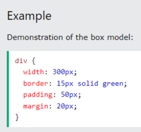

What is a box model in CSS. Give box-sizing property definition
The CSS box model defines the layout of elements on a webpage, consisting of content, padding, borders, and margins. The box-sizing property in CSS determines whether an element's width and height include padding and borders or just the content for instance content-box.

What is a “clearfix hack” and when does it need to be applied
The clearfix hack in CSS is like a trick to make sure a box holds all its floating things inside without collapsing.When floated elements are contained within a parent element, the parent element often collapses because it no longer recognizes the floated elements' heights.
What is a “margin collapse” and what are the use cases for margin: auto and negative margin values
Margin collapse happens when the top and bottom margins of adjacent elements blend together, making them appear as one. Setting
What was the problem with achieving Holy Grail layout
The challenge with achieving the Holy Grail layout was creating a webpage layout with a header, footer, and three fluid columns of content while maintaining equal column heights and cross-browser compatibility.
What are the modern ways to achieve Holy Grail layout
Modern ways to achieve the Holy Grail layout include using CSS Flexbox or CSS Grid, which provide more flexible and efficient approaches to creating complex layouts compared to traditional methods like floats and positioning. These newer techniques offer better support for equal height columns, responsive design, and cross-browser compatibility.